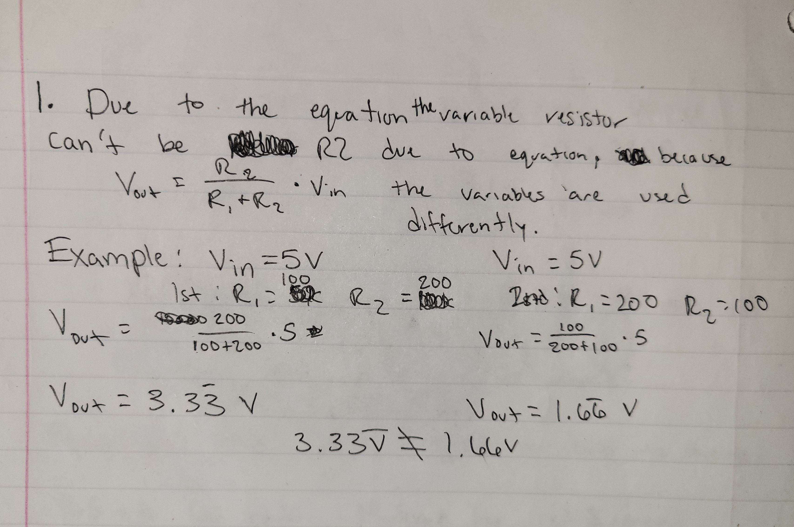
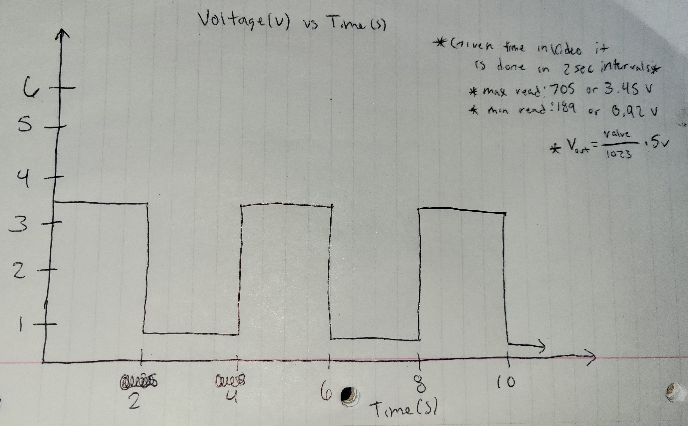

The top view of the breadboard connected to the Arduino board.
Schematic and resistance of the LED and button. There are separate calculations for the LED and sensor.
For calculations of the resistance needed. There is five volts available but the red LED uses 1.8 volts leaving 3.2 volts available. Using the equation pictured above we can calculate the resistor needed using the 3.2 volts available and desired current of 20mA. Leaving 160 ohms so we use the 220 ohm resistor. For the sesnor it would be a slightly different calculation because there is a max of a 5 voltage drop instead.
For the motor it was different because it used a capacitor unlike the others and was based on the Ardunio site.
// Initialize the values of the max and min for the integer values that correlate to voltage
// Also Initialize the servo and the library for it
#include
int low = 1023;
int high = 0;
Servo myservo;
//Initialize the Serial.begin (it is in bits per second) to read out values collected during program and the LED pin and servo.
void setup() {
Serial.begin(9600);
pinMode(11, OUTPUT);
myservo.attach(9);
}
void loop() {
// Read the input value from A0 that is being changed by the potentiometer and store it as int value
int value = analogRead(A0);
// Next two lines print out the initial value from A0
Serial.print("Raw Value: ");
Serial.print(value);
// If the value is below low then low is changed to the value
if (value < low ) {
low = value;
}
// If the value is above high then high is changed to the value
if (value > high) {
high = value;
}
// We then use map to change the value from one range to another range. Where one range is the low and high with a buffer of 30 in case of any numbers outside the range, and from 0 to 255.
value = map(value, low + 30, high - 30, 0, 255);
// The value that comes from the map is then printed out
Serial.print(" | Mapped Value: ");
Serial.print(value);
// The value is then constrained further to be between the values of 0 and 255 due to the buffer
value = constrain(value, 0, 255);
// The value is again printed after the constraint
Serial.print(" | Constrained Value: ");
Serial.println(value);
// The LEDs then use the value after it has gone from the original analogRead through the map and constrain functions to change the brightness of the LEDs.
analogWrite(11, value);
// The value is then converted by the map function to fit with the servo motor. It goes from a high and low of 255 and 0 to 180 and 0.
int servoValue = map(value, 0, 255, 0, 180);
// The servo position is then set
myservo.write(servoValue);
// There is then a delay for the servo movement
delay(15);
}
Q1: In your voltage divider, can the variable resistor be either R1 or R2 or does it need to be one or the other? Justify your answer with example calculations.
Q2: Draw a graph where the x-axis is time and the y-axis is voltage. Plot the voltage at V-measure of your voltage divider of your shared gif.
Q3: AnalogWrite and analogRead are respectively 8-bit and 10-bit values. Imagine you had 10-bit PWM and a 16-bit analog-to-digital converter instead. How would this change your map() code? Explain your answer.
If we used 10-bit PWM and 16-bit analog-to-digital then the parameters of the map() would be much larger. With more bits we are able to store and use more data, more so in the way that the readings would be more precise. This in turn would make the parameters larger because of the precision. With the 10-bit we had a range of 0-1023, but with a 16-bit we would have a range of 0-65535.